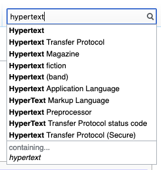
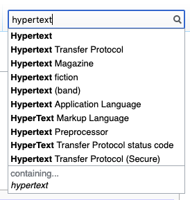

Introducción a la web
¿Qué es internet?
Es un conjunto descentralizado de redes de comunicación interconectadas que utilizan la familia de protocolos TCP/IP.
¿Hace cuánto que existe?

Sus orígenes se remontan a 1969, cuando se estableció la primera conexión de computadoras, conocida como ARPANET, entre tres universidades en California.
¿Qué es la web?
Es un sistema de distribución de documentos de hipertexto o hipermedia interconectados y accesibles a través de Internet.
¿Hace cuánto que existe?

La Web se desarrolló entre marzo de 1989 y diciembre de 1990, por el inglés Tim Berners-Lee con la ayuda del belga Robert Cailliau mientras trabajaban en el CERN en Ginebra, Suiza.

¿De qué está compuesta una web?
<html> Contenido </html>HTML: contenidos y estructura.
.css{
color: pink;
}CSS: apariencia visual.
var numTotal = 4;
if( numTotal > 3 ){
alert("Javascript!");
}JavaScript: comportamiento/programación.
¿Qué pasa al acceder a una web?
Para publicar una web necesitamos alojar los archivos necesarios en un ordenador permamentemente conectado a Internet, con un software concreto y una dirección física, una IP (ejemplo: 79.153.70.215).
Normalmente contrataremos este servicio, conocido como hosting, a empresas especializadas, pagando un alquiler anual.

Además, necesitamos contratar un dominio (también alquiler anual). Los dominios de Internet se centralizan en un registro controlado por la asociación sin ánimo de lucro ICANN, y permiten asociar un nombre y extensión (www.ejemplo.com, .net, .org…) con la IP de un servidor.

Cuando introducimos una dirección en el navegador (o seguimos un enlace), el navegador comprueba la IP asociada al dominio y se pone en contacto con el servidor.
A través del resto de la dirección, el sofware del servidor sabe qué archivo HTML debe devolver. Cuando accedemos a la raíz del dominio (www.ejemplo.com), el servidor suele mostrar el archivo index.html, la portada.
El navegador descarga un archivo de texto (HTML), que tiene información sobre sus contenidos, pero también información de los archivos dependientes (imágenes, hojas de estilo y scripts de JavaScript).

Una vez ha descargado imágenes y las hojas de estilo (CSS), tiene información suficiente para mostrar la página con el formato que esperábamos.
 

Y una vez ha descargado e interpretado el JavaScript, puede añadir interacción avanzada a la página (que inicialmente no se diferencia mucho de un documento Word).
¿Cómo ha evolucionado la WWW?

La WWW se desarrolla entre 1989 y 1990, y se publica en 1992.

Se van creando sitios web con estilos básicos, empleando para ello etiquetas HTML de estilado y con una interacción muy limitada.
La página de Space Jam, publicada en 1996.
En 1995 se lanza la primera versión de JavaScript, que permitirá añadir instrucciones de programación que se interpretan directamente en el navegador, y conseguir con ello páginas web mucho más interactivas.
En 1996 se lanza la primera versión de CSS, o Cascading Style Sheets, el lenguaje de estilado que permitirá separar el contenido (HTML) de la presentación visual.
Durante varios años, la web es patrimonio del ordenador de escritorio, cuyos monitores van ganando tamaño y resolución, pero resultan bastante uniformes.

En 2007 llega el iPhone, el primer smartphone, y con ello nos vemos obligados a crear una web que pueda funcionar también en estos dispositivos (y los que vendrán).
En 2010 Ethan Marcotte concibe el Responsive Web Design, un conjunto de técnicas y reglas para que el mismo sitio web se adapte a diferentes dispositivos.
Entre 2010 y 2014 surgen frameworks como Angular, React o Vue, basados en JavaScript y pensados para crear web apps, sitios web con alta interacción en el navegador sin necesidad de recargar la página.
La popularización de estas librerías y la complejidad de los desarrollos y las herramientas hace cambiar el paradigma de cómo vemos las páginas web.

Ya no hablamos de páginas, sino de componentes.

Identificamos los elementos que componen y se repiten a lo largo de una interfaz, los aislamos y centralizamos su diseño y desarrollo.